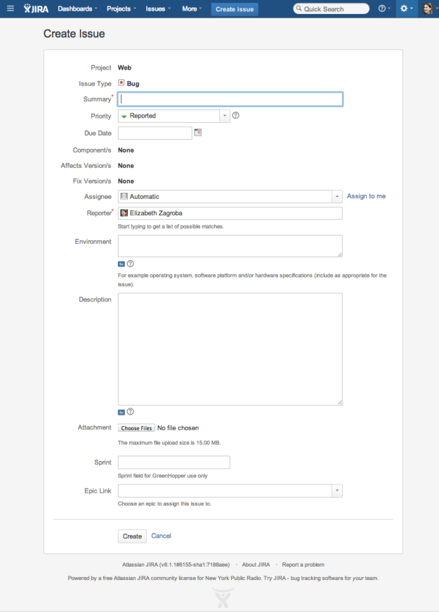

Writing Clear and Effective Bug Reports
You’re looking at an existing product and you think you’ve found a bug. You want to get the bug fixed, so you collect the necessary information and get into the hands of someone who can do something about it. Now you need a clear and effective bug report.
Clear Bug Reports
A clear bug report includes (1) what the feature is, (2) how you’re expecting the feature to work, and (3) what the feature is doing at the moment.
1. What the feature is: For the front end of the website, the admin view of the CMS, or an API point, a URL can be sufficient. If it’s a certain part of a page, call out the title of the section and include a screenshot. If it’s a visual thing rather than a data thing, try it on more than one browser or mobile device. Specify the environment where you saw the error.
2. How you’re expecting the feature to work: This turns out to be where miscommunication most often occurs. It’s also the easiest section to leave out of a ticket. It will feel like you’re writing exposition that everyone already knows. Unfortunately, you can’t read the minds of designers, developers, or users, nor can they read yours. Developers probably can’t remember what you said if you mentioned what you had in mind at a scrum. Write your expectations down so everyone can refer back to them and debate them together.
3. What the feature is doing at the moment: Screenshots are great. If a hard error is returned, include the stack trace or a link to the stack trace. If it’s working in one place and not in another, take a screenshot of the two URLs side-by-side. If your screenshot includes features you’re not addressing, take a smaller view or draw an arrow to the point you’re talking about. For transitions and scrolling issues, record a screen capture or call a second team member over to make sure the way you’re describing the experience makes sense. If it takes more than visiting the URL or mobile app screen to see what you’re talking about, include how you’re able to reproduce it and how often it occurs if it doesn’t happen every time.
These guidelines apply to any user, internal or external, trying to communicate with the development team. If you’re a software tester, all of the above is contained in the description and attachments of the ticket. Filling out the rest of the fields make the difference between a ticket getting the appropriate attention instead of languishing in the backlog.
Effective Bug Reports
Before you decide to create a new ticket in JIRA, see what other tickets already exist. Find other tickets about the same feature. Find the ticket where the same thing happened but in a different environment. Find the ticket that was closed because no one could reproduce it. Find the ticket that’s already open that a developer wrote and you didn’t understand until you saw the bug yourself. Collect all these tickets and link them to the new ticket you wrote. Explain how your issue is different from these existing issues so no one closes your ticket as a duplicate.
In the JIRA at my current job, we use a limited number of Projects (Web, Mobile Apps, and a few particular internal departments) and Issue Types (Epics to group tickets within projects, Bugs for most other things). Choosing the Issue Type as New Feature or Task can give a project manager a better idea of how long a ticket will take, but since Bug is the default we end up using that most often. We completely ignore the Due Date and Component fields. We only use Affects Version and Fix Version for the mobile apps, where there are clearly delineated versions.

The Summary is best when it addresses (1), (2), and (3) as described above. Given the implicit character limit of the width of an Agile board (70–80 characters), it makes more sense to address (1) and either (2), (3), or the specific environment where you were able to reproduce the bug. If possible, include a salient keyword so it’s easy to refer to the bug at meetings and search for it in JIRA.
Set the Priority as the lowest possible option unless a project manager or a business owner suggests otherwise. Software testers can help everyone understand the pros and cons of prioritizing bugs, but we’re not the only ones making those decisions. Bother the project managers, not the developers, if your bug isn’t getting the attention it deserves.
If there’s a project currently in development and it’s clear a particular developer’s work caused the bug, make that developer the Assignee. If it’s not clear which developer caused the bug, make the lead developer the Assignee and add suspect developers as Watchers. If it’s not clear how the feature was intended to work or how the bug should be fixed, assign the ticket to the lead UX designer. If it’s not clear if the project is being worked on, assign the ticket to the project manager. Add yourself as a Watcher to all tickets so JIRA will email you when someone goes rogue from the workflow.
While Environment seems like it should be used for the browser version, OS version, or model of phone, that information gets lost unless it’s included in both the Summary and the Description. I use Environment for an important but too often forgotten part of the software development lifecycle: listing the people who were affected by the bug so you know who to email when you fix it. It’s in a location on the ticket that’s both easy for project managers to find and easy for developers to ignore.
See the Clear Bug Reports section at the top for what you need to include in the Description and Attachments. If there’s more than one attachment, change the filename to what differentiates them from each other (before and after, browser version, date, production vs. test server) before you upload them.
Add the ticket to the current Sprint if the priority has been set higher than the default and the project manager requests it. If there’s an upcoming sprint with a theme that the bug falls into, put it there. Otherwise leave it in the backlog for the project and product managers to prioritize. Include the ticket in an Epic if the Project designation is too broad or the ticket will get lost in the backlog without it.
JIRA automatically assigns a unique ticket number to each new ticket using the Project slug and the next available integer that corresponds to the {permalink_domain}/browse/{project_slug}-{integer}. When tickets are moved between projects, old URLs redirect to new ones.
Originally published at murphyslawtester.wordpress.com on February 24, 2014 and duplicated on Medium.